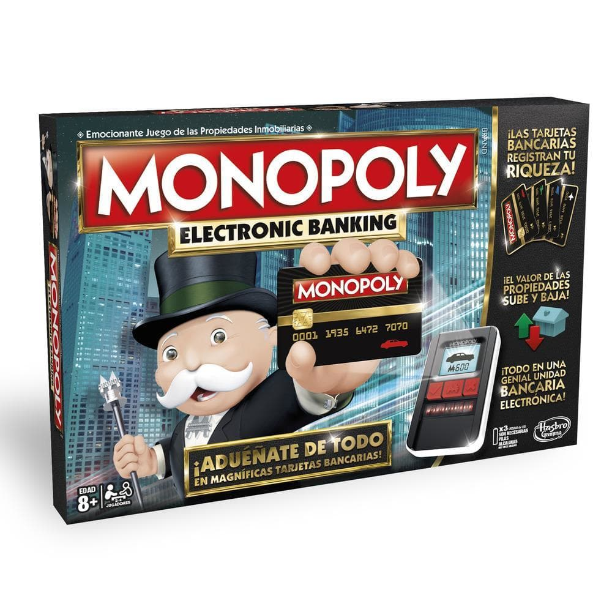

El juego de mesa más vendido de la historia
Un juego creado con la función de servir como herramientas para crear las teorías hacerca de la justicia social y económica extraídas del estudio titulado Progreso y Miseria de Henry George.
Comercializado por vez primera en el año de 1936. Alo largo de 80 años, el juego a sufrido una notable evolucion. Sus múltiples ediciones y sus tantas versiones han dado pie a que se cambiara desde la caja que lo contiene hasta los elementos que lo componen. Logrando así, mantenerse como el favorito a través de las décadas.
Con los años la finalidad del juego cambio para sólo disfrutar un buen rato, negociano propiedades y hasta haciendo uso de medios electrónicos para todas las transacciones que requiere el juego.
Con información de Grafica.info.cultura visual